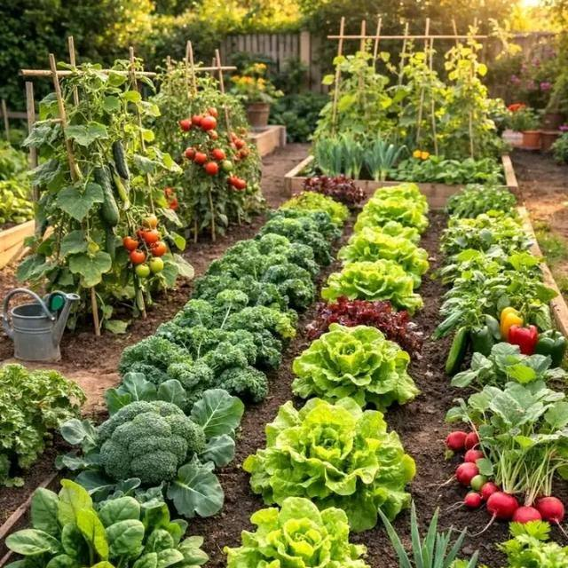

About Us
About A1 Kitchen
A1 Kitchen is a restaurant and catering business. We prepare both African and European dishes, and we can be hired to cater for any type of event across Sierra Leone.
Why "Awan"?
A1 Kitchen is registered in Sierra Leone under its legal name, Awan Kitchen and Catering Services. "Awan" is the Krio way of saying A1 ("A" plus "wan", which means "one").
Our Mission
Our goal is to provide quality meals and reliable catering services while creating a positive experience for our customers. Customer satisfaction is one of our key goals, and we do everything we can to make sure every customer receives their order.
What We Do
African and European Dishes
We prepare a variety of African and European meals for different occasions.
Catering Across Sierra Leone
We provide food for any type of event, anywhere in Sierra Leone.
Food Orders
Customers can order meals for themselves, families and groups, for delivery or pickup.
Our Vision
A1 Kitchen is growing, and we have plans for the future. We are working towards growing many of our own vegetables in a garden of our own, and in the long run we plan to rear domestic animals for use in our cooking. The aim is for the food we prepare to be as fresh as possible.

Come Taste the Difference
Order your favourites or let us cater your next event.